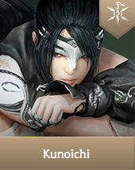
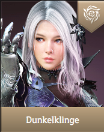
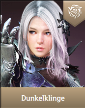
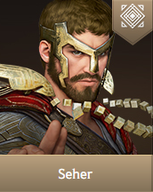
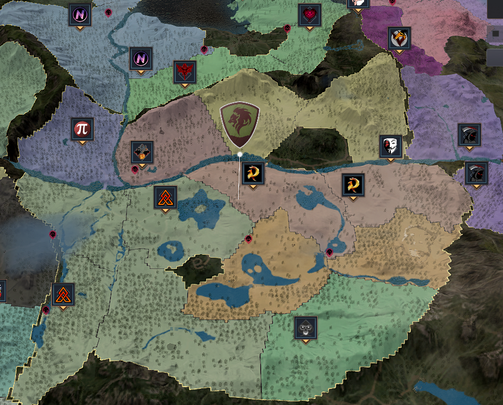

Black Desert Online (BDO)
Die Welt
Die gesamte Welt von Black Desert besteht momentan aus 8 Regionen. Wobei jede Region ein einzigartiges Biom bietet.
Darunter:
- Balenos
- Serendia
- Calpheon
- Mediah
- Valencia
- Kamasilvia
- Drieghan
- Odyillita
Klassen
Momentan gibt es 23 Klassen in der europäischen Version von Black Desert.
Jede Klasse besitzt 2 unterschiedliche Spielweisen (Erweckung & Wiedergeburt).
Mehr Infos zu den einzelnen Klassen gibt es durch einen klick auf das Klassenbild.



 


Wie bei anderen asiatischen MMOs üblich, sind auch hier die Klassen an ihr Geschlecht gebunden.
In den letzen Jahren hat sich Black Desert allerdings dem Wunsch der Spieler angepasst
und für manche Klassen ähnliche Klassen des anderen Geschlechts hinzugefügt.
Das Levelsystem
In Black Desert gibt es kein maximales Level, allerdings ist die benötigte Erfahrungsmenge ab Stufe 61 extrem hoch.
Der höchste Spieler (weltweit) ist Level 66 seit Jänner 2020.
Level 61 kann durch die Hauptquestreihe, Grinding oder auch die meisten anderen Aktivitäten im Spiel erreicht werden.
Die Hauptquestreihe
Ist in mehrere Handlungsstränge unterteil und führt den Spieler durch die komplette Spielwelt.
Der großteil der Quests besteht aus typischen Töte oder Sammel Aufgaben, allerdings gibt es auch
ein paar Ausnahmen wie z.B. das bestehlen einer Zielperson oder kleine Rätsel.
Grinding
Grinding bezeichnet das wiederholte töten einer großen Anzahl von Feinden.
Dieses teils eintönige Spielprinzip kann aber meist mit Musik hören oder dem ansehen einer Serie aufgelockert werden.
Aktivitäten
Black Desert bietet auch eine große Zahl anderer Aktivitäten.
Das umfangreiche Berufssystem
Neben den gewöhnlichen Sammeln und Verarbeiten gibt es auch einige ungewöhnliche Optionen.
Dabei kann jeder Charakter jeden Beruf nach belieben ausüben.
Jagen
Der Spieler kann Wildtiere mit Gewehren Jagen, daburch können Felle und Fleisch gezielt gesammelt werden.
Abrichten
Erhöht deine Fähigkeiten darin Pferde zu fangen, trainieren und zu züchten.
Handel
Kauft oder stellt Waren her und bringt sie in Städte mit hoher Nachfrage um möglichst hohe Gewinne zu erziehlen.
Anbau
Baut Nutzpflanzen an oder haltet Nutztiere.
Segeln
Verbessert deine Talente in der Schifffahrt.
Weltbosse
Anders als in anderen MMOs gibt es die beste Ausrüstung nicht in Raids sondern wird im Kampf gegen Bossgegner in der Welt.
Diese erscheinen mehrmals täglich und der ganze Server muss zusammenarbeiten um sie zu besiegen.
Erobere die Meere

Bau dir ein Boot und stich allein oder zusammen mit Freunden in See.
Erkunde vergessene Inseln, erledige Seemonster oder such Unterwasser nach Schätzen.
Baue dein Warenimperium auf
Heuere Arbeiter an, investiere in Posten und Städte und lass deine Arbeiter für dich Gegenstände sammeln und herstellen.
Nimm am großen Rennen teil
Auf verschiedenen Strecken kannst du zeigen wer der beste Reiter ist.
Housing
Dekoriere ein Haus nach deinen Vorstellungen. Manche Items können dich sogar verstärken.
Außerdem kannst du zum Beispiel dein eigens Alchemielabor einrichten.
Erkundung der Welt
Die Welt von Black Desert sieht nicht nur toll aus, außerdem erhält man durch das Entdecken unbekannter Orte, oder
dem Vorstellen bei unbekannten NPCs zusätzliche Ressourcen die auf den Abenteuern benötigt werden.
PvP
Abtrünnige
Jage andere Spieler in der Welt und erledige sie.
Tötest du jedoch zu viele andere Spieler (welche PvP aus haben) wirst du zum Abtrünnigen.
Dadürch kannst du die meisten Städte nicht betretten und ein Kopfgeld wird auf dich ausgesetzt.
Gildenkriege
Gilden können einander den Krieg erklären und sich somit ungestraft gegenseitig angreifen.
Postenkriege

Gilden können Posten beanspruchen, um welche mehrmals wöchentlich gekämpft wird.
Das halten eines Posten bringt der Gilde verschiedene Vorteile in der Entsprechenden Region z.B. Steuereinnahmen, mehr XP
Stadtbelagerungen
Die dominante Gilde in der Region kann auch die Kontrolle über die jeweilige Regionshauptstadt beanspruchen.
Welche dann auch regelmäßig vor anderen Gilden verteidigt werden muss.
Was kommt als nächstes?
Minispiel: Yarr
Ein Kartenspiel.
Überarbeitung der ältesten Klassen
Die ersten 13 erschienen Klassen werden überarbeitet um sicherzustellen das sie auch weiterhin mit den neuen mithalten können.
Neue Zone: Mountains of the Endless Winter
Ein neues schneebedecktes Gebiet im Süden der Spielwelt.